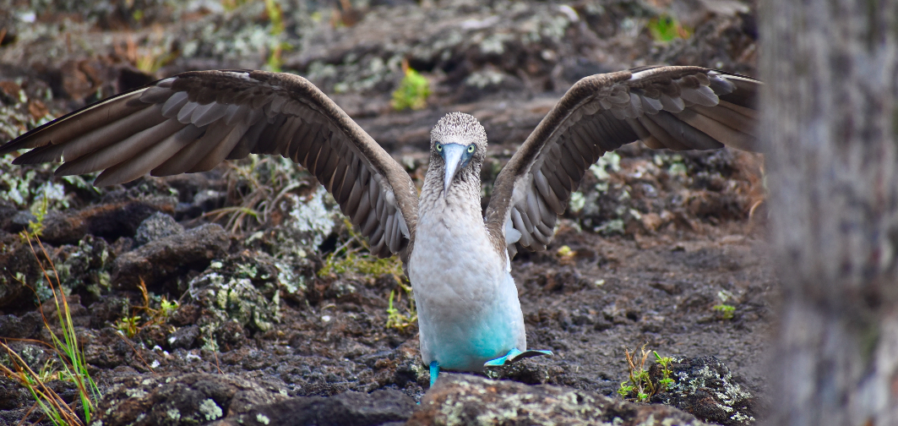
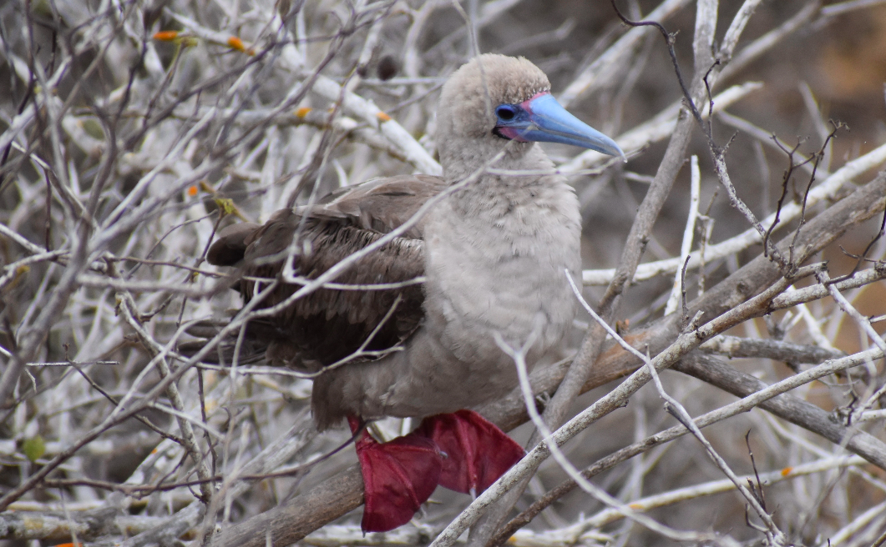
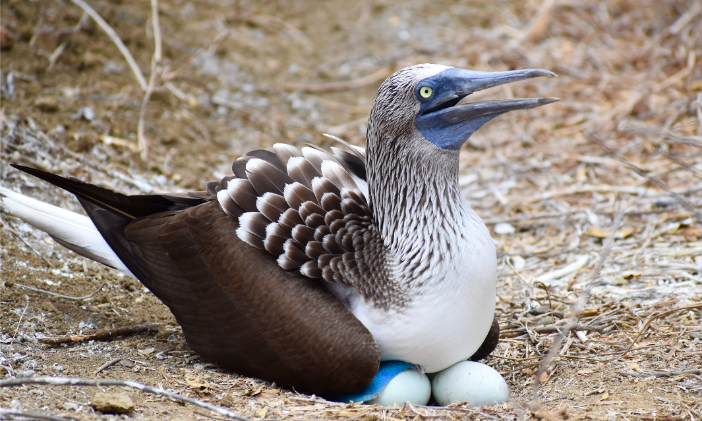
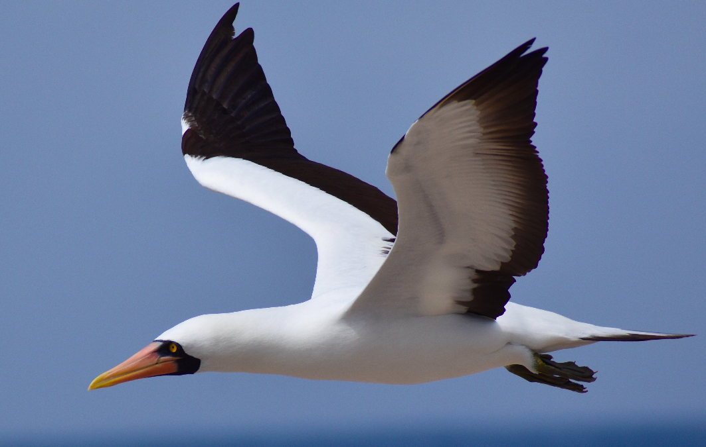

Boobies

In the Galapagos, blue footed boobies are like seagulls. They are everywhere! Unfortunately, in flight, it is hard to see their feet. So, if you are set on seeing boobies up close, you will likely have to pay for some sort of tour, as the booby nesting areas are highly regulated.

Punta Pitt ($150 to snorkel, $180 to dive)
Punta Pitt is the point on the back side of the island. It is a nesting site for blue and red footed boobies, and also hosts a variety of other bird species. On this tour, your boat will pull up to shore and your group will take a hike to see the boobies up close at their nesting sites. This tour provides the best opportunity to see boobies and their vibrant feet up close, as it is basically guaranteed that the birds will be nesting there. Boobies can be seen all around the island, but they are typically flying, and you cannot see their feet while they are in flight.
After the hike, you will have the opportunity to snorkel or dive at one of the few sites in the Galápagos that still has coral reef colonies. Most of the corals were wiped out during the El Niño event in 1998, but Punta Pitt still has a relatively healthy coral population.

Española Island Tour, San Cristobal ($200)
This tour takes you by boat from San Cristóbal Island to Española Island. Española is famous for the Waved Albatross, because it is the only current nesting site of this species. The Waved Albatross is migratory, and is only on the island to breed from April- December. To see the mating dance, it is best to go early in the season, around April-July. The albatross population will slowly decrease starting in November as they leave to migrate, and they will mostly all be gone by December.

360 Tour, San Cristobal ($150)
The 360 tour is my favorite tour excursion in the Galápagos Islands. It takes you to three locations: Rosa Blanca, Punta Pitt, and Kicker Rock. It is a full day tour that you can book through many different tour companies. Even in the high speason, you only need to book the tour a few days in advance. The tour gets its name because it makes an entire loop around San Cristóbal Island in one day.
Rosa Blanca is a shallow, mangrove lined bay that is used as a nursery site by white tipped reef sharks. These sharks are harmless, and lay on the sandy bottom, allowing snorkelers to hover right over them. It is truly breathtaking, and it is my favorite snorkeling spot in all of the Islands. Here you can also find massive turtles and marbled rays.
Punta Pitt is the point on the back side of the island. It is a nesting site for blue and red footed boobies, and also hosts a variety of other bird species. You can visit Punta Pitt on a tour dedicated entirely to the area, where you will take a hike to see the booby nests, where you can see the boobies up close. The 360 Tour only stops at Punta Pitt for a few minutes from the water, so bring binoculars if you want a close look at the vibrant feet!
Kicker Rock is San Crisóbal’s biggest tourist attraction. It is a beautiful rock just off the coast that has the richest species diversity that I have seen in the Galápagos. The rock creates a dramatic and steep wall where you can see all types of algae, sea urchins, sea stars, sea fans, sponges, and sea anemones. You can also see nudibranchs, octopi, and small coral colonies. As for fish, there are incredible schools that can be found here, and you can swim side by side with many different types of fish. In the warm season, you can find Hammerhead, Galápagos, and black tipped reef sharks swimming past you. You can take a tour dedicated entirely to kicker rock, but you will get approximately the same time allowed for snorkeling, and the 360 tour includes more locations, so I believe the 360 tour to be a better bang for your buck.